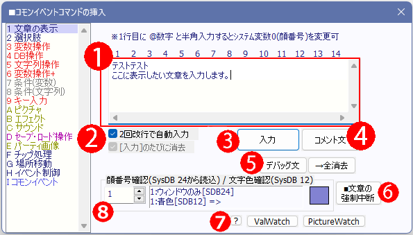
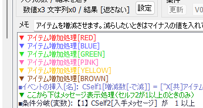
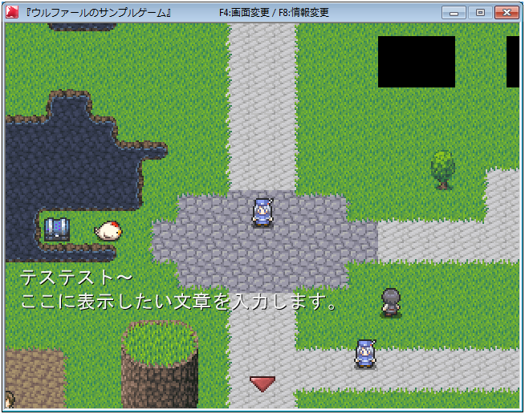

イベントコマンド 【文章の表示】
メッセージを表示するイベントコマンドです。

【各部の説明】
１．文章入力欄
ここに表示したい文章を入力します。入力には\v[?]や\s[?]といった特殊文字も使用可能です。
２．「入力のたびに消去」チェック
このチェックをオンにしておくと、「入力」ボタンまたは「コメント文」ボタンを押すたびにメッセージ欄が消去されます。
３．「入力」ボタン
メッセージ欄に入力された内容を入力します。これで入力された文章はゲーム中に表示されます。
４．「コメント文」ボタン
メッセージ欄に入力された内容をコメントとして書き込みます。コメントとは、あなたがRPGの開発においてイベントコマンド群に入力しておくメモ書きのようなもので、ゲームの実行中は何ら意味を持ちません。複雑な処理をする際にはコメントを入れて、後で見直したときに分かりやすくすることを推奨します。
なお、通常の「入力」と違い、コメント文に改行を入れると、イベントコマンド側でもその改行が反映されます。
なお、コメント文中に [RED]、[BLUE]、[GREEN]、[PINK]、[YELLOW]、[BROWN] のいずれかを入れると、その行の色変えが可能です。

５．「デバッグ文」「全消去」ボタン
「デバッグ文の入力」、及び「デバッグウィンドウのクリア」を行います。
「デバッグ文」処理が行われると、デバッグウィンドウに指定文字列が表示されます。文中には\cself[10]などの変数も使えます。
デバッグウィンドウが使用されているときのみ有効です。
メッセージの最後には、デバッグ文の追跡を容易にする目的で、「MapEv番号/コモンEv番号/行数」が自動付加されます。
※「デバッグ文の全消去→デバッグ文」を連続で行うと、リアルタイムに表示が変わるように見えます。
※当然ですが、同じフレーム内で「デバッグ文→全消去」という順で処理してしまうと、全部消去されて何も表示されませんのでご注意下さい。
デバッグウィンドウの詳細は「デバッグコマンド一覧」を参照。
６．「文章の強制中断」ボタン
並列実行イベントでのみ、有効な処理です。文章が表示されている場合にこの処理を実行すると、現在の文章表示を強制的に中断します。
7．「ValWatch」「PictureWatch」ボタン
クリックするとデバッグ文コマンドの「ValWatch:ON=」または「PictureWatch:ON=」を上部の欄に入力します。
詳しい説明は↓の方に記載されています。
８．顔番号確認/文字色確認 欄
ここの数値を切り替えると、「システムDB タイプ24」に設定されている「顔グラフィック名」ならびに、「システムDB タイプ12」に設定されている「文字色」名とその色を表示できます。
「@数字」による顔番号や、文字の色をすぐ確認できるようにするために用意されています。
【文章表示の例】

※初期状態ではメッセージ欄や顔グラフィックは表示されません、これらのシステムはコモンイベントで作成する必要があります。サンプルゲームに例があるので、それも参照してみてください。
【特殊な機能の解説】
・顔グラフィック番号入力機能
一行目に半角で「@」の後ろに数字を入れて改行すると、メッセージ表示直前にシステム変数0番「顔グラフィック番号」に入力した数値が格納されます。うまく使えばイベントコマンド1個分で「顔グラフィック変更」と「文章表示」をこなせるので、イベントコマンドの簡略化が行えます。
| 使用例： |
|
・連続改行で自動入力機能
「入力のたびに消去」チェックをオンにしているときに2回連続で改行すると、自動で「入力」が行われます。複数の文章を入力しているときにもキーボードから手を離さなくて良いので、慣れれば素早い文章入力が可能です。
また、Shiftキーを押しながら2回連続改行すると、その文章を「コメント文」として入力することができます。
【「デバッグ文」による監視機能】
●「デバッグ文」の隠しコマンド1 【変数監視機能 ValWatch】
たとえばデバッグ文に
| ValWatch:ON=2000009 |
と入れると、「変数操作」コマンドなどで指定した変数に直接アクセスされたとき「デバッグウィンドウ」に以下のように表示されます。
【見本】 ※通常変数9に4が格納されたとき
# ValWatch=> 2000009 = 4
-->[MapEv14/4行]
※またこの機能を使うと「コモンイベントの高速化」がオフになるので、
コモンイベントの処理時間が平均で「元の6倍以上」になります。
高負荷の状況をテストするのにも使えます。
高速化「オフ」の状態でもEv処理時間が10ms以内におさまっていれば、他機種への移植もやりやすそうです。
→ 【注意!!】コモンイベント中のどこかに1行でも「デバッグ文」の「ValWatch:」コマンドがあればコモンイベントの高速化処理がオフにされるので注意してください。「0回ループ内」など絶対に実行されない場所にあってもです！
※【注意！ ValWatchで数値計算が狂う場合があります！】
ValWatchを使用中は、高速化が解除される影響で、コモンイベント内の変数操作などで数値が「2147483647」を超えると
「-2147483648」に逆転してしまう現象がなくなり、常に数値が±20億以内におさめられるようになります。
±20億近くの値を使う計算を行っている場合や、あるいは計算ミスなどで知らない間に21億を超えたことによる
数値の逆転が発生していた場合、ValWatch機能のON/OFFで
計算結果に差が発生してしまう場合がございますのでご注意ください。
●「デバッグ文」の隠しコマンド2 【ピクチャ監視機能 PictureWatch】
たとえば「デバッグ文」機能で
| PictureWatch:ON=123 |
と入れると以後ピクチャ123番を監視し、そのピクチャになにか処理が行われるたびに、「デバッグウィンドウ」にそのピクチャ番号と処理位置、処理内容（表示(New） 移動（Move) 消去（Delete） ディレイリセット（Delay Reset) ピクチャエフェクト（Effect））が表示されます。
「ON」のところを「OFF」にしてデバッグ文を実行すると監視状態をオフに出来ます。
【見本】 ピクチャ123を「表示」したとき
# PictureWatch=> 123 <New>
-->[ｺﾓﾝ696/28行]